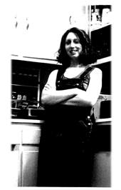

|
 | "It has to start somewhere... " |
|
My name is Betsy Frederick. Elizabeth Lorene Frederick if you want to get technical.
There are 9 E's in my name. I’m proud of that. I’m 20 years old. I am a Duke student,
studying psychology and art history and getting my certificate in film and video. I
guess I’m an amateur filmmaker. I volunteer at the animal shelter. I like to hang out
with the cats. I work in the psychology department with the infant learning project....I
basically watch babies all day blinking. I also work in the special collections
department - the Hartman Center for Sales,
Marketing and Advertising History.
I trained to be a DJ when I was a freshman, the fall semester freshman year. At home I used to listen to the college radio station in my home town. My dad works at the university and he used to take us down to the game room in the student center and we would walk by this door that was blocked off with this loud music was coming from it. I had no idea what it was. Finally, we went down there, and I realized that it was a radio station. That's when I started listening to college radio. I just thought it was something I wanted to get involved in. I mean it was the type of music that listened to. It was like, hey, that's kind of neat, so I’ll do it. I just had to get involved in everything the first week of school. My first show was from 5-7 am on Sunday mornings. Ouch. I just didn't really expand my knowledge of the music library. I just kind of picked out things that I had heard, but that was probably because they were more well known. Then I had 8-11 Friday mornings. Once I had three hours I started exploring other sections, because I’d get bored with what I picked out...Now I’m much more willing to try different things. I make a daily trip into the vinyl library. Even if I haven't heard of something, I’ll try to play it. Picking out three things and cuing them and trying them and actually finding that I had a taste for things and that there are certain things that I like and certain things I don't like. And then if you opened up the liner notes, to read them and figure out what it's about. The tail end of my freshman year, I was giveaways director...It was definitely coming into the station daily that got me comfortable there. I just kept coming to board meetings. I just randomly stayed involved - ordering T-shirts and stuff and taking that on. I became random odd job girl. I started designing the program guides and then I was promotions director. For a long time it thought, oh no, I’ll never be general manager, I don't think I could do that. But then the idea come into my head...I thought I would love to do it, that's something I really believe in. I’d love to put myself into the service of the station. What attracted me to the station was a conversation I had with Steve Roberts [engineer]. We were just talking about the neighborhoods of Durham. And I was talking to someone who wasn't from Long Island, or wasn't from California and didn't drive a BMW. Someone who had just had a completely different experience than I had growing up. I just thought that was wonderful. I’d meet people with some incredible ideas. I just think that I could learn so much more from these people than I ever could either in my classes or from my peers. I always like to think of XDU as kind of more of an enlightened place in the Duke community. A place where you get some real experience. I mean literally in the fact that you work some radio equipment but also figuratively in that you meet people outside the ivory tower. And I think that's an incredible thing to have at the university - to have a station that is run all by volunteers and run by a diverse group of people who have a lot of different ideas and have a lot of different viewpoints. We have the sports show which is really neat. That we get a listening crowd that we don't normally get and I think that's great. I think that everyone kind of sees us as sort of a service, which is wonderful, and a resource to listen to. Even if it's just for Durham broadcasts or that half an hour or an hour that they do a sports broadcast. I also hope that those people would sometimes stay and tune in for a little while but, I think it's a place that if people know about it they will come and learn about different types of music and different types of personalities. As much as we talk about it and I wonder about it and people kind of joke that they don't listen to it, I’ve run into more people who say "Oh well, yeah I listen to that, I tuned in.”...I’ve never gotten a bad vibe about it. I think people do respect it in a certain way. I’ve heard more encouraging things. I don’t think I’ve heard too much "It's not worth it." I get mostly a positive feeling about it. I believe that the station is an incredible form of expression, both from the DJ and the musician. Every show, if you listen to the show you can almost, if you know the people at the station, you can know who's on the air without having known the schedule cause everyone has a personal style and a certain message they're trying to get across. and I think that's incredible. I don't know if I have a message. I just want people to know that there is beautiful music that's not played on other stations. The public service announcements that we do I think are one of the best things that we do b/c there are a lot of people out there who can get their voices heard and I think we're vehicle for them. For a while I was into music that was very far away from instruments. I was so amazed that you could make music out of things like sampling. Like you take pieces of other music and you put it together into one thing and that is your own. And its completely improvisational, which is incredible. That kind of music is so changeable, so very much your own but then very much not your own. I think that's a very interesting philosophy in terms of music and the direction in which its going. Music is one of the strangest things in that it’s a completely natural form. |
whatever shows we have are when a DJ feels they're ready to do one. I think
that the type of music we play is a reflection of the type of DJs we have at the station. I
think just by default we're going to play very different things. Until the staff meeting, I
didn't realize how many different, I don’t' want to say types of people there are. But
you see some funny personalities that just come up and you don't realize that they're
there. At the meeting everyone will speak up and everyone kind of knows each other,
sort of by name or has met each other before. I’ve never seen such a different groups of
people get together in one place before. There's definitely not the level of interaction I’d
like to see there. I mean, I’ve had an incredible experience getting to know people from
the community. It gives me an entirely different perspective, not just on Durham but a
lot of different issues. And I’m afraid that mostly what I hear from people is that you
know the person before you and the person after you and that's all you know. so I’m
afraid the students might stick more to themselves and not really talk to the community
members. But I think that the people who do, get a spectacular benefit from them.
But, I think people, when they come to Duke, they have a preconceived notion of what a college radio station should be. Most of the time the general manager is a paid position and a lot of the positions are paid. It’s not so much that it's a job to do, but that there's a whole different feel to it. I think students just have a preconceived notion of what it should be and when it doesn't meet their expectations, they don’t know what to make of it. I’m afraid that that's the point where they stop investigating what XD is. Some people go past that and are more interested in what we do, but I think it’s just the fact that it doesn’t fit into their paradigm of what a college station should be. There's people there with strong opinions, which is something you don’t run into all the time. Strong opinions which mean something, not strong opinions about "I didn’t get housing this year. Housing sucks." People with strong opinions about things that really mattered to me, things that I thought were important. A lot of radio stations are just the bastard cousin of the top 40 radio station, still non-commercial but playing all the same things. We don't have block programming, we don't have this hierarchy going on at the station - it's all volunteers...I think it has a much more communist feel to it, which I like. College radio is like doing anything in a university. it's funded without having to answer to the marketplace. We're supported in a way that we can do what we want to do. It's really about progress I think. about doing something different that people may not be used to but in the end people realize is a huge benefit to our society. It truly is an educational experience I think. I'm afraid that people at Duke, as a generalized population, tend to stick with what they know. XD is, I don’t know if it's radically different, but it's definitely different...It's where you have to admit that you don't know everything and explore and learn something new. And Duke students tend to be assured they know what they're doing. Which is good and bad. I mean, it's good to know what you're doing, but I think its bad if you don't always except new things. People from the community have to make an effort to come to the station, it’s something they choose to do. I think students, they can kind of go in and out a lot easier because they're on campus. They have so many other opportunities, if it’s not immediately something that they want to do, it may be a turn off and they move on to something else. It’s not a weeding out process, but it does mean, which I think is great, that people who want to be there really want to be there. And it think that's a benefit to any organization. that the people who are there really want to be there. [The antenna situation] is horrible now b/c I think people are starting to get frustrated. But I think also people are encouraged by the fact that everyone has stayed on. If a lot of people dropped out and decided not to do it anymore, I think everyone would have gotten discouraged. But since nobody has dropped out, I think that nobody really says it, but I think everyone's really proud of that. I went through this whole disillusionment phase, this whole jaded Generation X phase, where everything was controlled and everything was filtered through "for your enjoyment." It's necessary to have something that truly comes from the people who are there. There's nothing in between the station and the people who hear it, I don't think. I think that it's necessary to progress. There is music that is controversial and there is music that has messages that really do affect people. It has to start somewhere and I think college radio is the place where that starts. It's not like a Britta water machine. I wish everyone had the same experience that I did. I'm sad that you have to make an effort to get to know people there...The thing that I wish the most is that we didn't have theft problem and that we could leave our front door open. And people could just come in to the station and just hang out there. That it would be a social place where people could talk about stuff. I wish people would communicate more about the type of music that they enjoy, that they listen to. I don't think there's much of a crossover. I wish people had more ready information. That's why I’d love to put a computer up in the station - that would make things more accessible in a way in that people who really want to try new things feel informed about it and can inform their listeners. The music forum is somewhat for that, but there's still a line between people who know a lot about music and people who don't know a lot about music. Music forum is a binder up in the MCR, full of recycled paper, and it’s basically just people expounding on whatever they want to say. And you can just read it. People will write "This CD sucks" or people will write about how this CD relates to the issues going on in Uganda and the civil war it's having. If it gets late enough, people start writing about the meeting of life in there. It’s just a place to write down their crazy thoughts. It's incredible to read. I wish I could put it into words what the station means to me. I guess it’s changed my life, in that I have several homes on this campus and the station is one of them. |